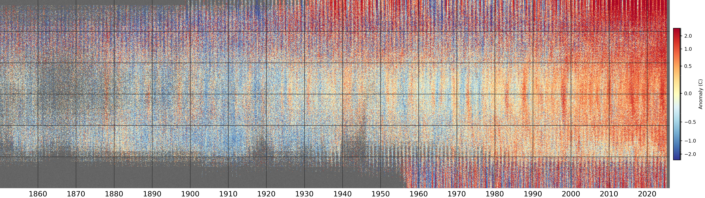

A revised plotting method¶
I made the original version of this document about 5 years ago (2019), and since then I’ve come up with an improved version of the plotting method. The basic plot produced is much the same:

Monthly temperature anomalies (w.r.t. 1961-90) from the HadCRUT5 dataset after regridding to a 0.25 degree latitude resolution. The vertical axis is latitude (south pole at the bottom, north pole at the top), and each pixel is from a randomly selected longitude and ensemble member. Grey areas show regions where HadCRUT5 has no data.¶
The colour scale is quantile-normalised, so the figure contains the same number of pixels in each colour.
As well as being faster and more flexible, the new plot script has the capacity to smooth the plot by convolution. This distorts the relationship between local and large-scale data, and hides some of the missing data, but it does highlight the large-scale patterns in the data. This is the same plot, with a 3x3 pixel convolution applied:

Same extended stripes plot of HadCRUT5, but with a 3x3 pixel convolution applied.¶
I’m not entirely happy with the loss of direct data sampling, but I think this version is more useful, so I’m standardising on 3x3 convolutions.

{kind=link}